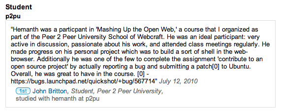
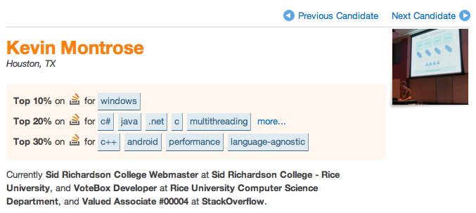

I have been interested in certification (and assessment related to certification) for a while. I believe it will drive the next big step for P2PU.org as well as for the open education movement as a whole. Getting it right is important.
Thanks to Brandon Muramatsu and Vijay Kumar I’ve spent some time this week trying to make sense of the latest developments in this space. Vijay and Brandon invited me to speak to the students in their “Open Education Practice and Potential” course at the Harvard Extension School about “Opportunities in Certification of Open Education” (slides are embedded below, and there is a recording of the elluminate session as well).
My core set of slides that I use in most presentations starts with the suggestion that “the system is broken“, which I think is true but also gets peoples’ attention. I then argue that because of open educational resources the content problem is fixed, and that increasing access let’s us connect to millions of other people to learn with. Which means “now everyone can fix the broken system.” Enter P2PU. While P2PU is a good example how this is true for the learning piece of education, is it really true for the certification/credentialing? Can the open education community hack certification?
To answer this question, I decided to walk myself and the group through the steps of creating a certificate that has value and legitimacy, and use examples that exist today to highlight my points. What do you need to make a certificate?
Step 1 – You need a source of authority
In the past, this authority came from the reputation of institutions (“Nevertheless, he’s an Oxford man.”) and an intricate system of accreditation bodies and quality review structures. It’s a system that works well for disciplines that don’t move too fast, and as long as it can reasonably be true that only a small group of “experts” really knows what’s going on. Unfortunately, and there are many reasons for this, even this old system often breaks down (“Oxford, New Mexico!”) and increasingly relies on seemingly random college rankings to establish authority.
While it has its’ challenges, the existing system offers great opportunities for open education projects to move from the informal to the formal learning world – and give its users access to mainstream credentials. That’s why the University of the People is bravely working towards full accreditation, which will let them issue degrees that are equally recognized as other colleges in the U.S. P2PU has decided to not pursue accreditation – it felt like we’d have to give up the most interesting things about our model in order to qualify – but instead to partner with accredited institutions like the University of California Irvine for certification (that is backed by accreditation, just not ours).
But you don’t need an institution anymore to issue certificates. David Wiley (as usual, one step ahead of the curve) already did this a few years ago in his “Introduction to Open Education” course where anyone who completed the materials could request a Wiley Certificate. But David Wiley is a Professor at an accredited University, so he is still part of the accredited system, right? Right! But you don’t even have to be a Professor, or have a college degree for that matter, to do the same. John D. Britton, Software Evangelist at Twilio and maverick geek, credentialed participants in his P2PU course by leaving recommendations on their LinkedIn profiles. And they listed the P2PU course in their education history.

Maybe the most exciting example of new sources of authority is Stack Overflow’s Career 2.0 portal. The details are worth their own blog post – but essentially Stack Overflow has found a way to surface community rankings and evaluations in a way that can replace degrees. It’s much more granular and shows the specific skills and interests a developer has, it’s transparent because it links directly to the evidence for the results, and it’s based on the opinions of thousands of fellow software developers. Stack Overflow is betting that employers get more value out of reviewing applicants on Careers 2.0 that they would get from a college degree. And I think they are right.

Step 2 – Something to show your boss, and that you can hang on your wall … your Facebook wall
It’s great to have a wall full of degrees, but very few people get to see them. Wouldn’t it be more useful if we could instead share these degrees on our Facebook wall, our wordpress.com blog, our tumblr stream, and or our LinkedIn profile? And while we are busy hanging degrees, why not also share all the other achievements we might be proud of – the fact that we took a “Vegetarian Cooking” course at the Culinary Institute, that our fellow open source developers named us a “Community Builder”, or that we solved Mozilla’s “JavaScript Expert” challenge. We are entering future territory here, but this is exactly the kind of system P2PU is working on with Mozilla (and support of the MacArthur Foundation and friends) and piloting in the School of Webcraft. An open badges infrastructure that let’s anyone issue “badges” (that’s what we call these signs of recognition) and that let’s users move them freely around the web. For details check the background materials on the Mozilla wiki and follow Erin’s blog.


{kind=link}
{kind=link}
{kind=link}
{kind=link}